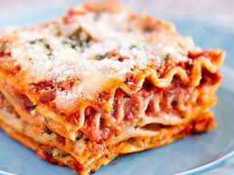

Lasagna

Description
Lasagna is a food that people eat for sustenance. Typically a dinner item it's warm and makes the yum yum in the tum tum. Also really good reheated for a next day lunch type deal. It typically contains meat cheese tomato based sauce and pasta. Very neat.
Tools needed include an oven, baking pan dish thing and a desire for greatness. I first discovered lasagna on a 3 week backpacking trip across the Himalayas. The dish was hidden at the base of a waterfall near our camp (I was crowned beach volleyball champion) in a tupperware container.
Ingredients
- 1 16 ounce package lasagna noodles
- 1 pound lean ground beef
- salt and pepper to taste
- 1 16 ounce jar spaghetti sauce
- 1 clove garli, minced
- 1/2 pound shredded mozzarella cheese
- 1/2 pound shredded Cheddar cheese
- 1 pint ricotta cheese
Steps
- Bring a large pot of lightly salted water to a boil. Add pasta and cook for 8 to 10 minutes or until al dente (all done good); drain.
- Preheat oven to 350 degrees F (175 degrees C). In a large skillet over medium-high heat, brown beef and season with salt and peper; drain. Stir in spaghetti sauce and garlic and simmer for 5 minutes
- In a medium bowl, combine mozzarella, Cheddar and ricotta; stir well. In 9x13 inch pan, alternate layers of noodles, meat mixture and cheese mixture until pan is filled